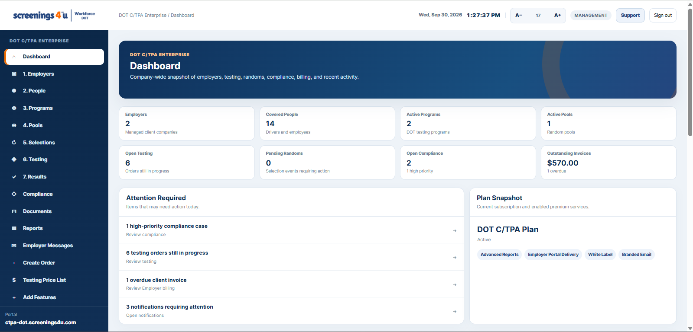
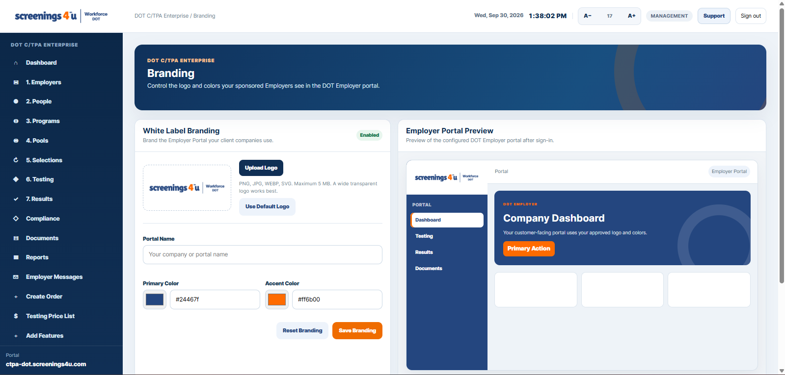
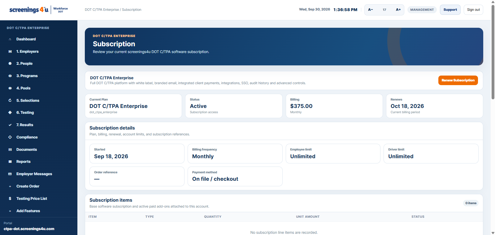

Employer Software
Manage your regulated workforce, programs, random activity, testing, results, documents, reports, notifications, and compliance records.
From $85/month
Explore Employer Software →Run employer programs, covered people, consortium pools, random selections, testing workflows, results, documents, reporting, billing, and client administration from one connected subscription platform.

Choose the workspace that matches how you operate. Plan pricing below is loaded from the live DOT subscription catalog.
Manage your regulated workforce, programs, random activity, testing, results, documents, reports, notifications, and compliance records.
A focused workspace for a single-driver business to manage program records, pool participation, testing, documents, and reporting.
Manage multiple employer clients, people, programs, pools, selections, testing, client billing, pricing, branding, staff, and employer portal delivery.
The product is organized around real operational modules, not generic dashboard filler.
Client companies, covered employees, drivers, contractors, staff, DOT agency context, portal access, and account status.
Create DOT programs, assign employers, manage consortium pools, eligibility, annual rates, and pool membership.
Run scheduled or one-off selections with pool population, selection event, and audit visibility.
Create and monitor testing orders, track fulfillment handoffs, view status, and keep results connected to the right person and program.
Keep open compliance items, program documents, notifications, follow-up activity, and reporting in the same account workspace.
Manage subscriptions, service orders, employer billing, staff roles, locations, integrations, and white-label employer portals.
Enterprise C/TPA accounts can configure portal identity, colors, client-facing branding, users, integrations, billing, and operational access from the same software.


Software subscriptions are separate from testing and fulfillment services.
We can walk through Employer, Owner-Operator, or C/TPA software and the modules that apply to your DOT program.